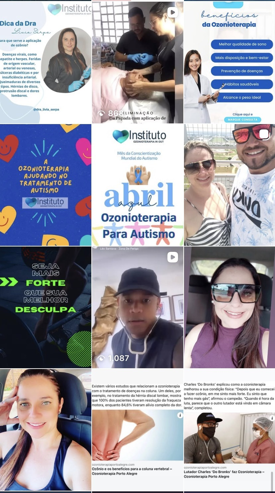
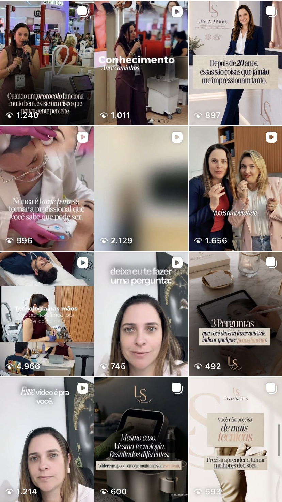
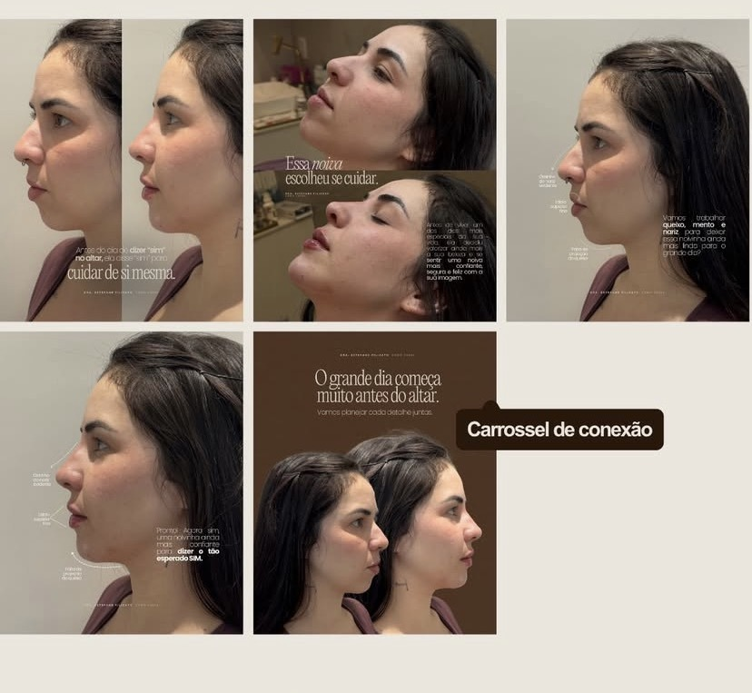
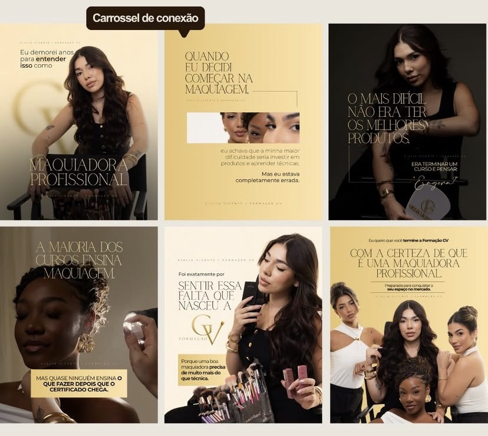

Uma presença digital bonita chama atenção.
Uma presença estratégica constrói valor.
Sou Victoria Benevides, estrategista digital, designer e criadora de conteúdo. Trabalho unindo posicionamento, planejamento e criação para construir uma comunicação visual coerente com a essência e os objetivos de cada marca.
Frentes de serviço com escopo ajustado à proposta contratada.
Entendimento do negócio, público e comunicação atual.
Objetivos, posicionamento e linhas de conteúdo.
Pautas, formatos e calendário editorial.
Desenvolvimento das peças, textos e roteiros previstos.
Organização e execução conforme o escopo combinado.
Leitura de indicadores e otimizações contínuas.




Vamos olhar para o seu perfil, identificar oportunidades de melhoria e conversar sobre os próximos passos para fortalecer sua comunicação digital.